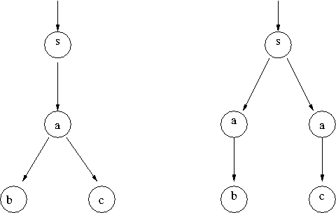

Sixth lecture
Friday 5 April 2013, 16:15 to 18:15
Accessible online at: http://ow.ly/jM1MQ
First, a bit more work with NuSMV:

- Above you see two transition systems with states labeled
s, a, b and c. Implement both in NuSMV.
- Is there an LTL property which differentiates the two? That is, an LTL property F such that F holds for one of the systems, but not for the other?
- Find a CTL property which differentiates the two transition systems. Verify your claim.
For the rest of this lecture, and also the next one (which will be the last), we'll use model checking in a non-traditional way.
- A farmer wants to cross a river in a little boat, together with her dog, her goat, and a cabbage. The boat can only hold the farmer and one other thing (and the farmer does the rowing, so she needs to be in the boat for crossing the river). Also, if left alone, the dog will scare away the goat, and the goat will eat the cabbage.
How can the farmer get all her things across the river, without the goat running away and without the cabbage being eaten?
Write a formal model of the system, using Spin or NuSMV, and use model checking to solve the puzzle. (Hint: Make it so that your solution will be a counter-example.)
- Have a look at the Frog Puzzle at http://www.hellam.net/maths2000/frogs.html. Write a formal model of the puzzle (which works for an arbitrary number of frogs) and use model checking to solve it. How many frog moves does the solution take?
- How many frogs can your model checker handle? Can you optimize it to handle more?
- At http://www.puzzles.com/products/RushHour/RushHourVideo.htm you will find the puzzle game Rush Hour. Use model checking to solve a few of the puzzles at http://www.puzzles.com/products/RushHour/RHfromMarkRiedel/Jam.html.
- Can you find solutions for Rush Hour puzzles which take as few steps as possible?
- (Difficult!) Now assume that the cars can move independently (in parallel), and use your model checker to find fastest solutions.